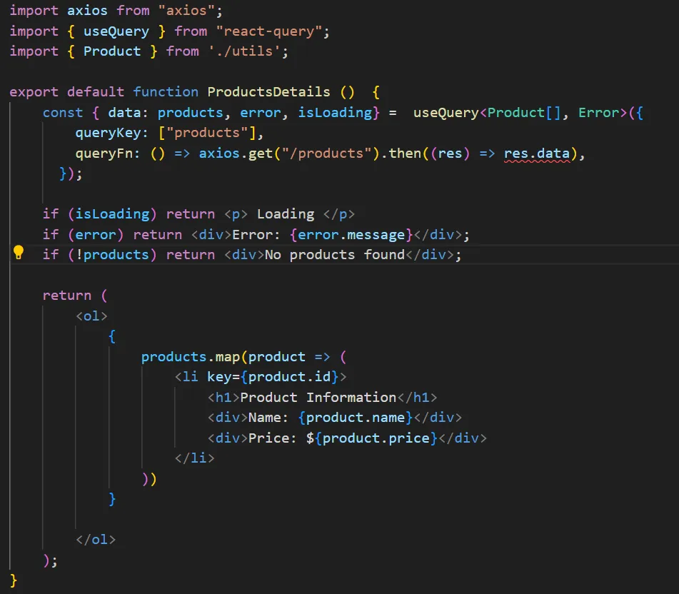
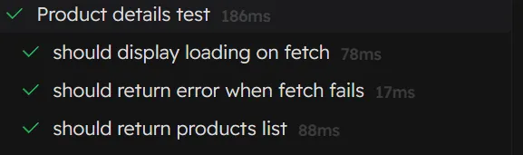
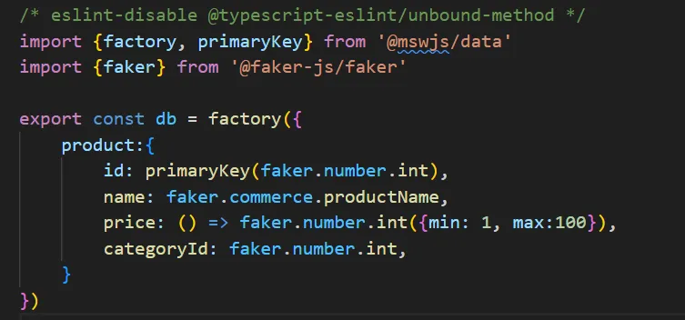

Lets begin by looking at some disadvantages of manual test data.
- Overhead maintenance could lack realism especially in data driven applications.
- Could be expensive maintaining epecially in large project/where data stracture changes frequently.
"We achieve this using mock service worker, which allows us to mock HTTP requests without having to call the backend. This will make our tests more efficient, more independent, maintainable and very fast to execute."
1. We will begin by demonstrating how the legacy flow using msw and manual data is achieved.
For simplicity we expose our baseUrl in our main file using axios.
import axios from "axios";
import React from "react";
import ReactDOM from "react-dom/client";
axios.defaults.baseURL = "http://localhost:3000"; // baseUrl exposed
ReactDOM.createRoot(...);
Now we have access our /products address anywhere in our application.
2. Create Product model interface and export it from utils.ts
export interface Product {
id: number;
name: string;
price: number;
categoryId: number;
};
3. The Component being tested ProductDetail.tsx
4. Test our component using manual data — ProductDetail.test.tsx
import { render, screen } from '@testing-library/react'
import { HttpResponse, delay, http } from 'msw'
import { QueryClient, QueryClientProvider } from 'react-query'
import ProductDetail from './ProductDetail'
describe('Product details test', () => {
const renderComponent = () => {
const client = new QueryClient({
defaultOptions: {
queries: {
retry: false,
}
}
})
render(
QueryClientProvider client={client}>
ProductDetail/>
/QueryClientProvider>
)
}
test('should display loading on fetch', () => {
http.get('/products', async() => {
await delay()
return HttpResponse.json([])
})
renderComponent()
expect(screen.queryByText(/loading/i)).toBeInTheDocument()
})
test('should return error when fetch fails ', async () => {
http.get('/products', () => {
return HttpResponse.error()
})
renderComponent()
expect(await screen.findByText(/error/i)).toBeInTheDocument()
})
test('should return products list', async () => {
http.get('/products', () => {
return HttpResponse.json([
manual data --> hard to scale and maintain
{id: 1, name: 'Epic 1', price: 10, categoryId: 1},
{id: 2, name: 'Epic 2', price: 20, categoryId: 2},
])
})
renderComponent()
const items = await screen.findAllByRole('listitem')
expect(items.length).toBeGreaterThan(0)
})
})
If your implementation went well, you should get success on all tests
→ We will now implement our test cases using mswjs/data and fakerjs
We export our database function with our model object from db.ts
5. Test our component using database function — ProductDetail.test.tsx
Implement health check endpoints to monitor service health:
import { render, screen } from '@testing-library/react';
import { HttpResponse, delay, http } from 'msw';
import { QueryClient, QueryClientProvider } from 'react-query';
import { Product } from './utils';
import { db } from '../mocks/db';
import ProductDetail from './ProductDetail';
describe('Product details test', () => {
const products: Product[] = []
beforeEach(() => {
// dynamically created data
[1, 2, 3].map(() => {
products.push(db.product.create())
})
})
afterAll(() => {
const productIds = products.map(x => x.id)
db.product.deleteMany({where : {id: {in: productIds}}})
})
const renderComponent = () => {
const client = new QueryClient({
defaultOptions: {
queries: {
retry: false,
}
}
})
render(
QueryClientProvider client={client}>
ProductDetail/>
/QueryClientProvider>
)
}
test('should display loading on fetch', () => {
http.get('/products', async() => {
await delay()
return HttpResponse.json([])
})
renderComponent()
expect(screen.queryByText(/loading/i)).toBeInTheDocument()
})
test('should return error when fetch fails ', async () => {
http.get('/products', () => {
return HttpResponse.error()
})
renderComponent()
expect(await screen.findByText(/error/i)).toBeInTheDocument()
})
test('should display error if product fetching fails', async () => {
http.get('/products', async () => {
await delay()
return HttpResponse.error()
})
renderComponent()
expect(await screen.findByText(/error/i)).toBeInTheDocument()
})
test('should return products list', async () => {
http.get('/products', async () => {
await delay()
return HttpResponse.json(products)
})
renderComponent()
const items = await screen.findAllByRole('listitem')
expect(items.length).toBeGreaterThan(0)
products.forEach((p) => {
expect(screen.getByText(p.name)).toBeInTheDocument()
})
})
})